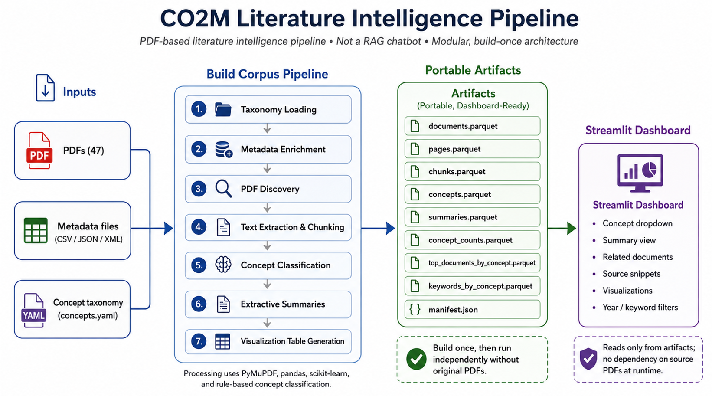
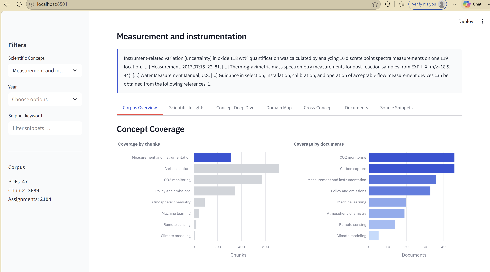

The Problem: Researchers Drowning in PDFs, Clusters Optimized for Batch Jobs
When you work on scientific computing infrastructure, whether at a national lab or a university HPC cluster, you quickly learn that most ML tools are built for the cloud and quietly assume things that simply aren't true on your system. They assume outbound internet access. They assume you can call an API mid-job. They assume your job runs to completion without being preempted. They assume someone will be watching a terminal.
I ran into all of these assumptions when I started building Materials Copilot, a larger project aimed at building a RAG-powered research assistant for materials science workflows. The first component I shipped was not the chatbot itself but the offline literature intelligence layer: the CO2M Literature Intelligence System, focused on carbon dioxide capture and mineralization papers. Getting it to actually work in an HPC context required rethinking a few things that are usually taken for granted.
The CO2M corpus is 47 scientific papers on carbon dioxide capture and mineralization. That sounds small, but 47 dense materials science PDFs, full of domain jargon, compound names, experimental conditions, and citations, is genuinely hard to navigate without tooling. Researchers need to answer questions like: which papers cover electrochemical mineralization? What are the temporal trends in sorbent research? Which documents are most relevant to a specific concept like "direct air capture"?
The obvious answer in 2024 is: build a RAG pipeline and put a chat interface on it. And that works fine on a laptop with a stable internet connection. On many SLURM-based HPC systems, especially restricted or air-gapped environments, that design becomes fragile quickly:
- No outbound API calls during a compute job
- Long queue times mean you can't iterate interactively
- Jobs get preempted; partial state needs to survive
- The people running jobs are not always the people querying results
These constraints pushed me toward a fundamentally different architecture than a typical RAG chatbot.
The Core Design Decision: Build Once, Read Forever
The central idea behind the CO2M pipeline is artifact materialization. Instead of a live pipeline that parses PDFs, classifies chunks, summarizes documents, and builds visualizations at query time, the system does that work once in a batch job and writes everything to Parquet files. The dashboard and any downstream consumers read only from those artifacts. The future RAG layer can consume these same artifacts to build embeddings and populate a vector database.
This sounds obvious when you say it out loud, but it has real consequences:
- The ingestion job can run on a compute node with no network access. It reads from the local filesystem and writes to the local filesystem. Nothing else.
- The dashboard can run on a login node, a local machine, or anywhere else. It has no dependency on the cluster that built the artifacts. You
scpthe Parquet files and launch Streamlit. Done. - Job preemption is survivable. Because each pipeline stage writes its own artifact, a preempted job can resume from the last completed stage rather than starting over.
The tradeoff is freshness. If you add new papers, you need to re-run the pipeline. For a research corpus that evolves slowly, that's an acceptable tradeoff.
The full flow looks like this:

Walking Through the 7-Stage Pipeline
The pipeline runs sequentially through seven stages, each consuming the previous stage's output.
Stage 1: Taxonomy Loading
Before touching a single PDF, the system parses concepts.yaml, a researcher-curated taxonomy of scientific concepts relevant to the corpus. This is the most important design decision in the whole system. Classification is grounded in domain vocabulary, not a generic topic model. If the taxonomy doesn't reflect how researchers actually talk about the field, everything downstream is noise.
Stage 2: Metadata Enrichment
Each document has a sidecar file (CSV, JSON, or XML) carrying structured metadata: authors, year, venue, DOI. These get attached to document records before any text processing happens, so every downstream artifact carries full provenance.
Stage 3: PDF Discovery
The pipeline scans the corpus directory, registers each document, and produces a manifest. This is the checkpoint. If a job is preempted after this stage, the system knows exactly which documents exist and can resume cleanly.
Stage 4: Text Extraction and Chunking
Pages are parsed and split into semantically coherent segments. Chunk boundaries respect sentence structure; we don't split mid-sentence to hit a token count. The current corpus produces 3,689 chunks from 47 documents.
Stage 5: Concept Classification
Each chunk is tagged against the taxonomy from Stage 1. This produced 2,104 concept assignments across the corpus, a coverage ratio of about 57%, meaning roughly half the chunks carry at least one explicit concept tag. That number is a tuning parameter; a stricter classifier reduces false positives but increases gaps.
Stage 6: Extractive Summaries
Per-document summaries are generated by ranking and condensing the highest-signal passages. No generative model is involved here. Summaries are built from the source text itself, which matters for reproducibility and auditability.
Stage 7: Visualization Table Generation
All outputs are written to a structured set of Parquet files: documents.parquet, pages.parquet, chunks.parquet, concepts.parquet, summaries.parquet, keywords_by_concept.parquet, top_documents_by_concept.parquet, concept_summaries.parquet, and manifest.json. The manifest records pipeline metadata (run timestamp, config hash, stage completion status) so you always know exactly what state an artifact set represents.
The Dashboard: What Researchers Actually See
Once the artifacts exist, the Streamlit dashboard is straightforward. It reads Parquet, renders a few views, and stays out of the way.
The most useful view is the stacked area chart of research activity trends. It shows how publication volume has shifted across concepts over time, which immediately surfaces things like "electrochemical approaches started dominating after 2019" or "sorbent regeneration papers cluster in 2017-2019." That kind of temporal structure is invisible when you're reading papers one at a time.
The document ranking view lets a researcher pick a concept and see the top documents by relevance, with their extractive summary and source snippets. It's not a chat interface; it's closer to a structured search results page. That's intentional. Researchers on a deadline don't want to have a conversation with their literature. They want to find the three most relevant papers quickly.

What Running This on HPC Actually Looks Like
The hpc_tools/ module provides SLURM job templates for the ingestion pipeline. A typical submission looks like:
The job runs on a compute node, processes the corpus, and writes artifacts to a shared filesystem path. Once it completes, a researcher on the login node runs:
and accesses the dashboard via SSH port forwarding. The compute job and the dashboard never need to be running at the same time.
What I'd Do Differently
The biggest gap right now is evaluation. I know the pipeline produces artifacts and the dashboard renders them, but I don't have a systematic way to measure whether the retrieval is good. A 20-question expert-curated QA benchmark drawn from the corpus would answer that, and it's the first thing I'd add before calling this production-ready.
The concept classification coverage (57%) is also worth pushing higher. The current approach tags chunks that contain explicit taxonomy terms. A small semantic classifier trained on labeled examples from the corpus would catch paraphrases and domain synonyms that keyword matching misses.
Finally, containerization. The pipeline runs cleanly with pip install -r requirements.txt, but an Apptainer image would make deployment on arbitrary HPC clusters genuinely one-step.
The Broader Point
Most of the interesting problems in HPC-adjacent ML engineering aren't about model architecture. They're about what happens when your assumptions about infrastructure don't hold: when there's no internet, when jobs get killed, when the person who built the system isn't the person who runs it. Designing for those constraints, materializing artifacts, separating compute from serving, grounding classification in domain vocabulary, produces systems that are less impressive in a demo and more useful in practice.
Materials Copilot is still early. CO2M is the first component of a larger system that will eventually cover the full materials science research workflow: RAG retrieval, conversational querying, agent-assisted synthesis. The infrastructure decisions made here, offline-first, artifact-materialized, taxonomy-grounded, are the foundation everything else will build on.